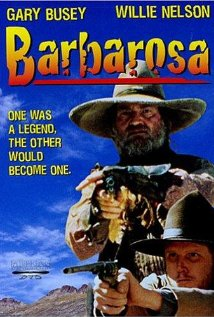

Film Categories
Mafiosos | Psychos | Outlaws | Thieves
Mafiosos

The Godfather (1972)
Director: Francis Ford Coppola
The story focuses on the powerful Italian-American crime family of Don Vito Corleone. When the don's youngest son, Michael, reluctantly joins the Mafia, he becomes involved in the inevitable cycle of violence.

Goodfellas (1990)
Director: Martin Scorcese
A young man grows up in the mob and works very hard to advance himself through the ranks. He enjoys his life of money and luxury, but is oblivious to the horror that he causes.
The Departed (2006)
Director: Martin Scorcese
South Boston cop Billy Costigan goes under cover to infiltrate the organization of gangland chief Frank Costello. As Billy gains the mobster's trust, a career criminal named Colin Sullivan infiltrates the police department and reports on its activities to his syndicate bosses.
The Untouchables (1987)
Director: Brian Da Palma
After building an empire with bootleg alcohol, legendary crime boss Al Capone rules Chicago with an iron fist. Though Prohibition agent Eliot Ness attempts to take Capone down, even his best efforts fail due to widespread corruption within the police force.
Psychos
The Silence Of The Lambs (1991)
Director: Jonathan Demme
Clarice Starling is a top student at the FBI's training academy. Jack Crawford wants Clarice to interview Dr. Hannibal Lecter, a brilliant psychiatrist who is also a violent psychopath, serving life behind bars for various acts of murder and cannibalism.

Seven (1995)
Director: David Fincher
When retiring police Detective Somerset tackles a final case with the aid of newly transferred David Mills, they discover a number of grizzly murders. They soon realize they are dealing with a serial killer who is targeting people he thinks represent one of the seven deadly sins.
American Psycho (2000)
Director: Mary Harron
In New York City in 1987, a handsome, young urban professional, Patrick Bateman, lives a second life as a gruesome serial killer by night.

Gone Girl (2014)
Director: David Fincher
With his wife's disappearance having become the focus of an intense media circus, a man sees the spotlight turned on him when it's suspected that he may not be innocent.
Outlaws
Young Guns (1988)
Director: Christopher Cain
A group of young gunmen, led by Billy the Kid, become deputies to avenge the murder of the rancher who became their benefactor. But when Billy takes their authority too far, they become the hunted.

Barbarosa (1982)
Director: Fred Schepisi
A young cowboy hooks up with a legendary outlaw, and before long both are on the run from the law.
Unforgiven (1992)
Director: Clint Eastwood
Retired Old West gunslinger William Munny reluctantly takes on one last job, with the help of his old partner and a young man.
3:10 To Yuma (2007)
Director: James Mangold
A small-time rancher agrees to hold a captured outlaw who's awaiting a train to go to court in Yuma. A battle of wills ensues as the outlaw tries to psych out the rancher.
Thieves
Ocean's Eleven (2001)
Director: Steven Soderbergh
Danny Ocean and his eleven accomplices plan to rob three Las Vegas casinos simultaneously.
Heist (2001)
Director: David Mamet
A career jewel thief finds himself at tense odds with his longtime partner, a crime boss who sends his nephew to keep watch.
The Usual Suspects (1995)
Director: Bryan Singer
A sole survivor tells of the twisty events leading up to a horrific gun battle on a boat, which begin when five criminals meet at a seemingly random police lineup.
The Italian Job (2003)
Director: Felix Gray
After being betrayed and left for dead in Italy, Charlie Croker and his team plan an elaborate gold heist against their former ally.